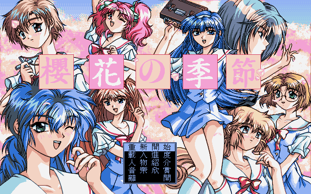
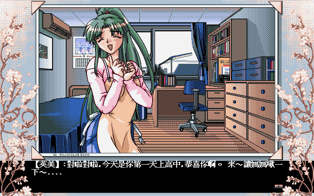

名稱：櫻花的季節 (中文版)
簡介：JAST 1996年出品的故事閱讀遊戲，由飛鯨國際中文化並代理發行。劇情描寫升至高中
的主角修司追求女孩的過程，而在劇情發展中，必須在8位女孩中挑選一位告白，成為
最終結局。整個劇情在色情部份較少，而多著重在主角高中生活的人際互動中，在其
他同類型的遊戲中算是比較正常的一個。只是這樣的設計，對於那些純粹為了看Ｈ圖
與色情故事的玩家，會比較難耐些。不過個人倒覺得這個遊戲平淡中有著溫馨之情，
也不能說是不好，但看玩家的觀點而已。


備註：本版為繁中原版光碟內容＋英文版音軌
保護：光碟，破解碼（放入光碟才有背景音樂）：
T_ADV1.EXE
0B C0 74 03 E9 C5
-- -- EB 74 -- --
B8 00 15 31 DB CD 2F 88 4E FD 89 5E FE C4
B4 19 CD 21 88 46 FD C7 46 FE 01 00 90 --
FF 75 05 B8 01
-- 90 90 -- --
E8 EB FD A3
B8 10 02 --
A0 C8 83 B4 00 A3 04
B4 19 CD 21 98 -- --
或 (以下破解無背景音樂)
0B C0 74 B9 8B C6
-- -- 90 90 -- --
0A 3D 01 00 74 0C
-- -- -- -- EB 40
EB 19 68 8A
-- 3B -- --
E9 F8 00 1E
-- 9A -- --
0A 59 B4 00
-- -- B0 02
備註：本版繁中光碟可能因為壞軌，造成最後幾個音軌有明顯雜音（酒精燒錄修正版，無法
通過光碟檢驗）。
攻略：（作者－青衫）
1.祥子：在她要求停止足球練習時，答應她成為結局。
2.白水：離開溫泉區時，選擇追趕成為結局。
3.惠依美、星愛：耶誕禮物送她後成為結局。
4.鈴子、清美、美緒、亞希：最後告白時選擇，成為結局。
以上除了祥子外，舞會與耶誕禮物最好都選同一人，否則告白時會失敗，成為失敗結局。